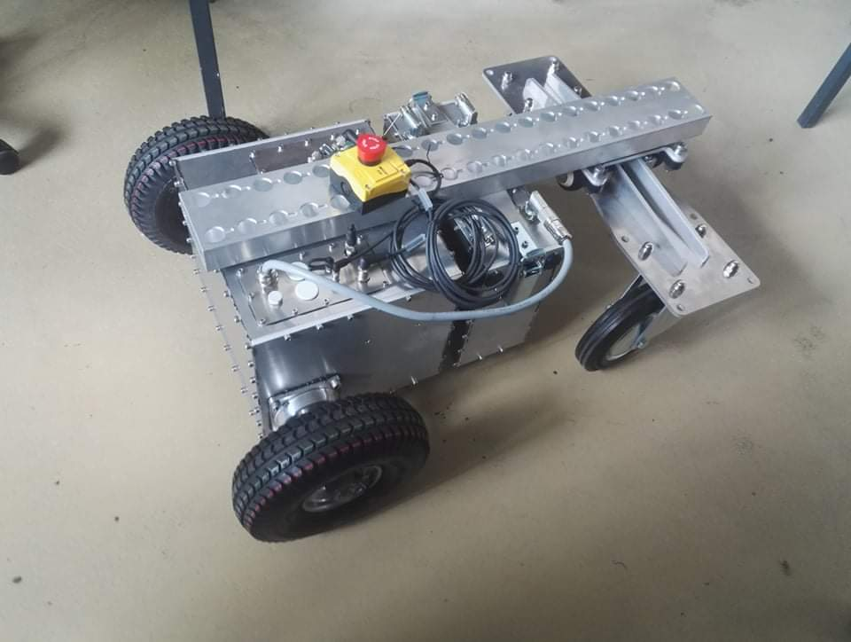

Construction sites are among the most difficult environments for robotics: they are dynamic, unstructured, dusty, and constantly changing. As the first employee at Conbotics, I was tasked with taking a concept for an autonomous wall-painting robot and turning it into a market-ready mobile platform capable of precise navigation in these harsh conditions.
I took 100% ownership of the software architecture for the mobile base. This involved implementing a robust Navigation Stack from the ground up using ROS. I integrated SLAM (Simultaneous Localization and Mapping) for environment discovery and utilized EKF-based Sensor Fusion to merge data from Lidar, IMU, and encoders for pinpoint localization. To handle site-specific obstacles, I engineered a perception layer using YOLOv4 and Realsense depth cameras for real-time semantic mapping.
In 2025, I transitioned from R&D to Lead Field Deployment Engineer for a mission-critical pilot in Singapore. This was where I bridged the "Sim-to-Real" gap. On-site, I identified discrepancies between our Gazebo simulations and the physical constraints of the construction site.
By performing deep Rosbag and telemetry analysis in the field, I optimized the path-planning parameters and PID controllers to handle varying floor frictions and lighting conditions. This direct intervention helped the company reach market readiness 6 months earlier than projected.